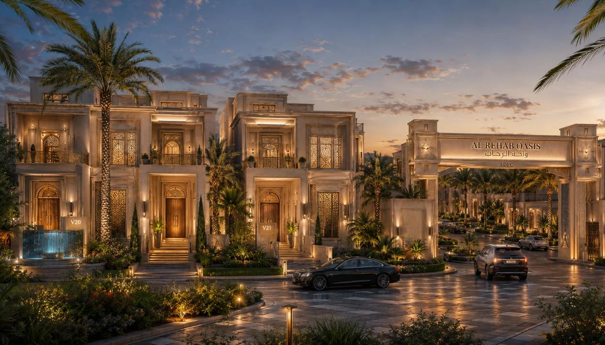
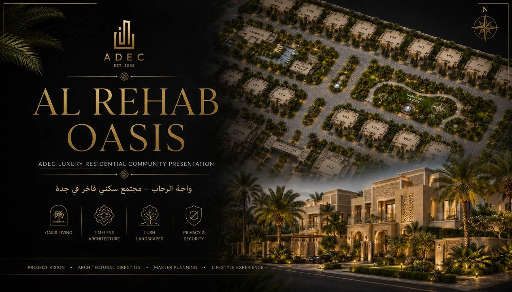
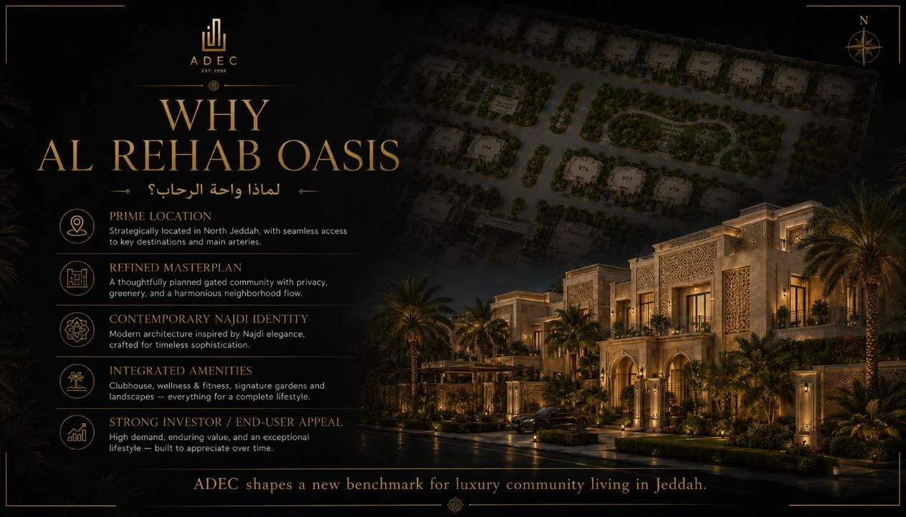
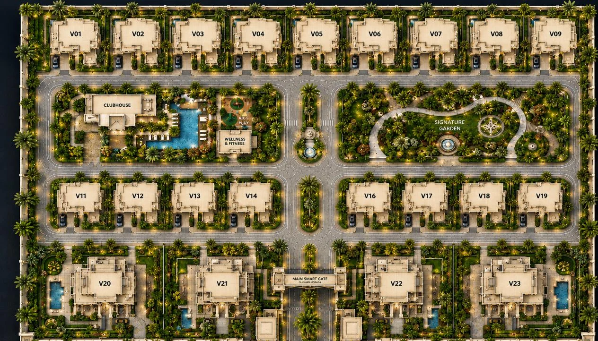
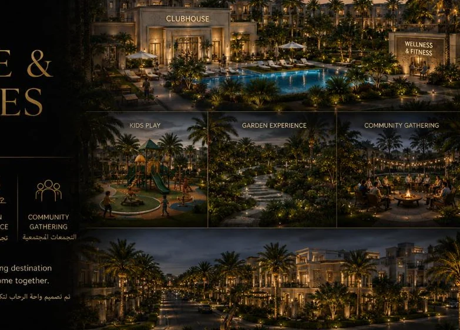
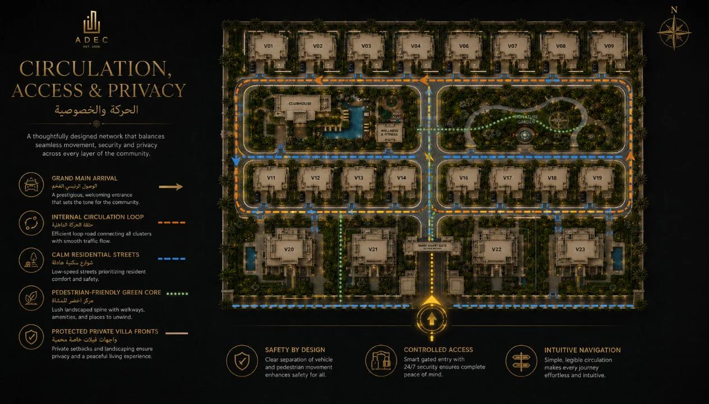
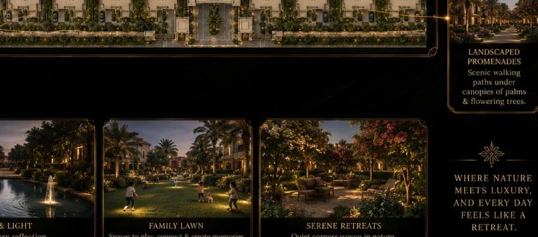
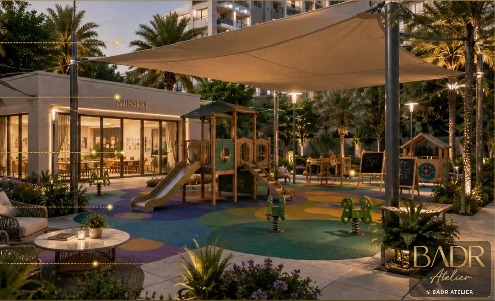
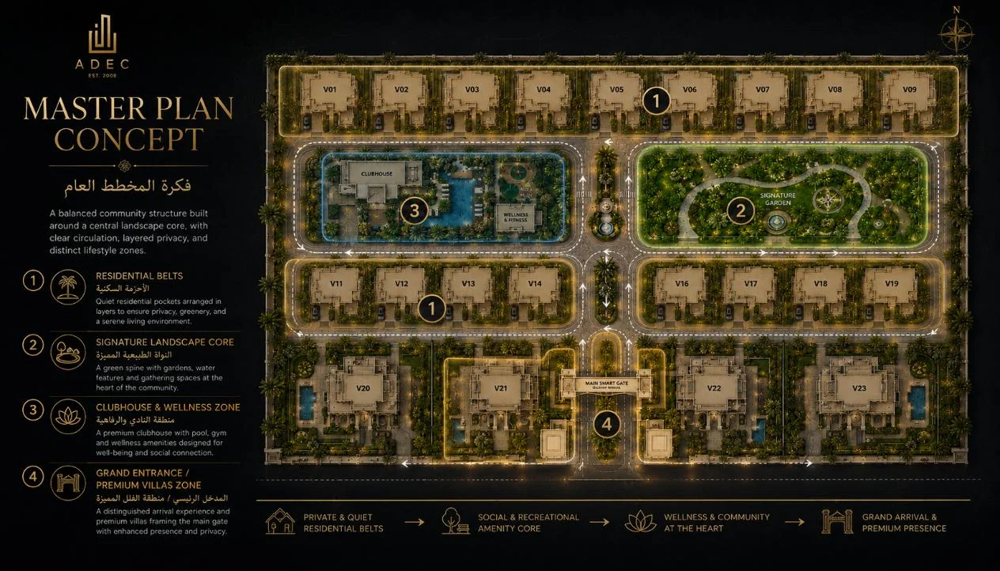
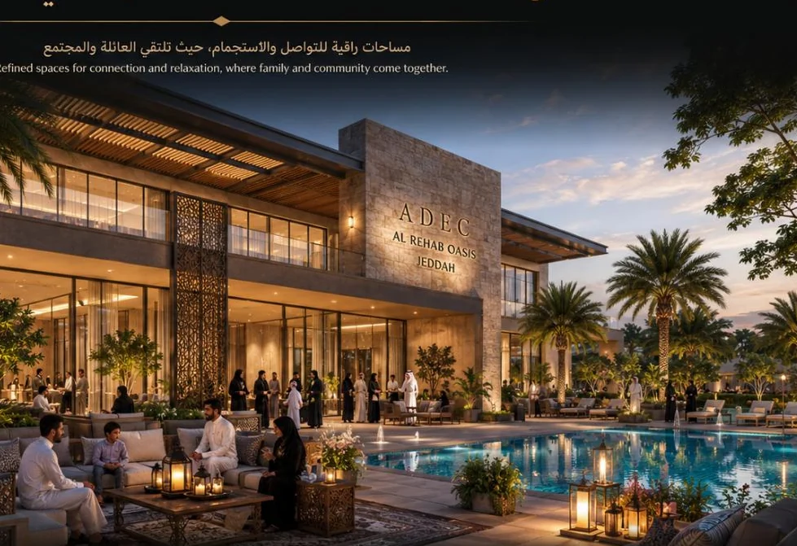

Arrival + Identity
A memorable gateway establishes the tone before the first villa is reached.
A residential oasis that transforms a fixed land parcel into a lifestyle community built around privacy, landscape, wellness and daily life.
The project is framed as a complete residential proposition: villas, landscape, wellness, arrival and community spaces working together as one recognisable lifestyle experience.
Lifestyle core, smart loop circulation, villa mix, clubhouse, wellness, green spine and signature arrival.
A memorable gateway establishes the tone before the first villa is reached.
Landscape becomes the connective tissue of everyday movement, views and gathering.
Standard, premium and signature products create choice without fragmenting the community identity.
Clubhouse, wellness and social spaces are placed where they can become part of daily life.
A visual sequence of architecture, atmosphere, movement and detail.










